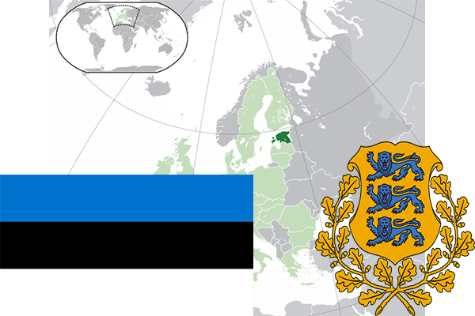

To`liq nomi: Estoniya Respublikasi
Region: Shimoliy-sharqiy Yevropa
Qonunchilik shakli: Respublika
Mustaqillik kuni : 8 -may 1990 yil (Sobiq Ittifoqdan)
Poytaxt: Tallin
Maydoni: 45 227 km² (dunyoda 132 -o`rinda )
Chegaradosh davlatlari: Rassiya, Latviya
Aholisi: 1 315 635 (dunyoda 151 - o`rinda, 2016 -yil roʻyxat)
Aholi zichligi: 29 /km²
Aholining o`rtacha yoshi: 72,5 yil ( 78,1 ayollar, 66,9 erkaklar)
Rasmiy tili: Eston tili
Dini: Lyuteranlar va pravoslavlar
Pul birligi: yevro
Telefon prefiksi: +372
Internet domen: .ee
Xalqaro tashkilotlarga a`zoligi: BMT (1991 – yildan), Yevropa Ittifoqi (2004-yildan), Shimoliy Atlantika shartnomasi (2004-yildan)
Dengiz va okeanlarga chiqishi: Boltiq dengizi
YIM: Butun: $ 35,167mlrd , Jon boshiga: $ 25 631 (2015 - yil roʻyxati)
Yirik shaharlari: Tallin, Tartu, Narva, Pyarnu